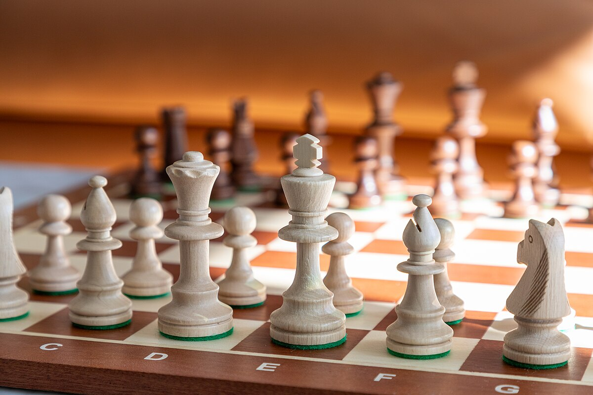
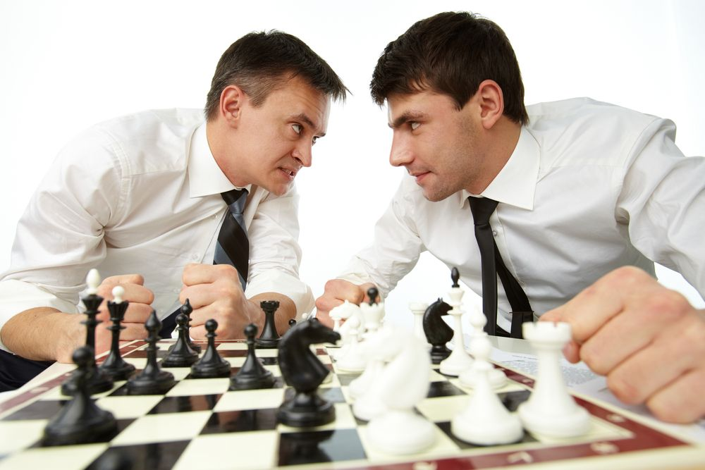

Chess (1475)
Checkmate your opponent in this timeless abstract.
- Chess is a two-player, abstract strategy board game that represents medieval warfare on an 8x8 board with alternating light and dark squares.
- Opposing pieces, traditionally designated White and Black, are initially lined up on either side of the board.
- Each type of piece has a unique form of movement and capturing occurs when a piece, via its movement, occupies the square of an opposing piece.
- Players take turns moving one of their pieces in an attempt to capture, attack, defend, or develop their positions.
- Chess games can end in checkmate (when the king cannot escape from the opponent's pieces), resignation (when one player recognizes that defeat is inevitable and ends the game), or one of several types of draws.
Reviews
[See 727 more reviews]-
I grew up with chess, playing on some of the first chess machines, and occasionally with friends. Alternating between chess, Shogi, and Xiangqi, I've developed a love for all three, and my son will happily play any of them with me any night... Chess has this image of geniuses playing it attached to it, but it can very much be enjoyed as a board game like any other. I play it like I would play, say, a game of Scythe.
Pandante - 10/10 -
...It has some interesting parts, but the numerous flaws discussed in this review tend to bring the game down. It's too simple and could have benefited from some additional mechanics. The rules of Chess are so easy that even hand held computers can be programmed to play the game well.
Corey Butler - 5/10 -
Chess is garbage. It has no real theme, no depth of story, nothing that's visually pleasing to look at, it's limited to exactly two players, it feels really slow and can end up in a pointless dead-end where none of the players can win, and it's designed in a way where the most experienced player will win more or less. Every. Single. Time.
MN7z - 1/10
Information
- Category: Strategy, Medieval
- Players: 2 or 1 with enough imagination
- Complexity: 3.65/5 [How is this rated?]
- Designer: (Uncredited)
- Artist: (Uncredited), Paolo Chiari, Anika Fairooz Chowdhury, Honoré Daumier + 9 more
- Publisher: (Public Domain) + 202 more
Showcase

